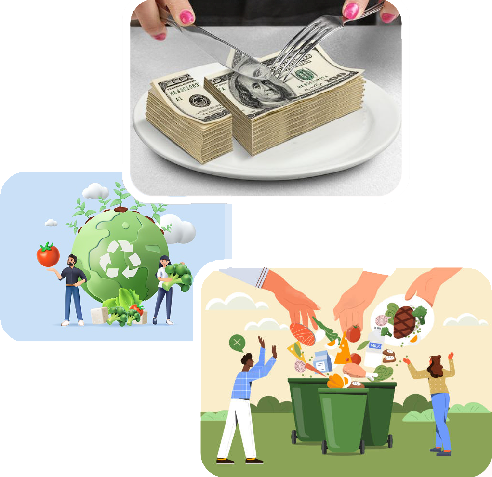
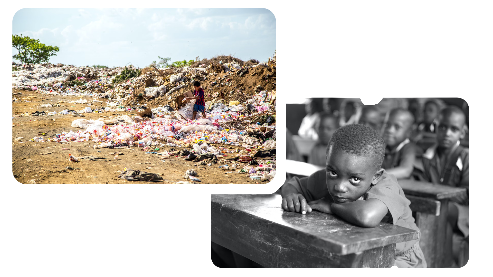

From Farm Fresh to Trash:
What is the basic idea of food wastage ? A Deep Dive into the
Global Food Waste Epidemic:
What is food wastage all about ?
.png)
Food wastage is a global crisis of epic proportions, a pressing issue that transcends cultural, economic, and geographical boundaries, undermining not only our ethical responsibilities but also our environmental and economic sustainability. Every year, an astonishing one-third of the food produced for human consumption, approximately 1.3 billion tons, is discarded, squandering resources, c ontributing to climate change, and perpetuating hunger worldwide. This extravagant squandering of food is a reflection of inefficiencies in the food supply chain, overconsumption, and a lack of awareness about the dire consequences of our collective actions. The consequences of food wastage ripple through society, depleting precious natural resources, exacerbating global food insecurity, and significantly adding to the greenhouse gas emissions that drive climate change. As we delve deeper into the complexities of food wastage, it becomes increasingly apparent that tackling this issue is not just a moral imperative but also a necessity for the future well-being of our planet and its inhabitants.
Effects
Global Issue And Economic impact:
So this one is a line
Food wastage is a significant global problem that affects both developed and developing countries. It refers to the disposal of edible food at various stages of the supply chain, from production and distribution to consumption. It disrupts the overall health of the people of a country , not only this would impact their work force , but also other different sectors. Food wastage has substantial economic consequences. It results in the loss of valuable resources, including labor, water, and energy, which were used in the production and transportation of the wasted food. This can lead to increased food prices and reduced profitability for farmers and businesses. Overall , this could also lead to increase rate of hunter , and indirectly , more deaths due to lack of food and nutrition.

Environmental Effects
So this one is a
When food is wasted, it often ends up in landfills where it decomposes and produces methane, a potent greenhouse gas that contributes to climate change.Wasting food means wasting the resources used to produce it, including water, energy, and land. This contributes to the depletion of natural resources.Agriculture and food production can lead to deforestation and habitat destruction. When food is wasted, these impacts on natural ecosystems are exacerbated.The use of pesticides and intensive farming practices can harm biodiversity. Food wastage intensifies the need for such practices to meet demand.

Social Effect and resource waste:
So this is line1
When food is wasted, it represents a waste of the resources used to produce, transport, and process that food, including water, energy, and labor. This results in a significant economic loss. While food is wasted, millions of people worldwide go hungry. Food that is discarded could have been used to alleviate hunger and malnutrition. While food is wasted, millions of people worldwide go hungry. Food that is discarded could have been used to alleviate hunger and malnutrition.

Copyright © 2023 | Research and design by shaurya aggarwal | Complete Project by shaurya aggarwal | Registration Number : 12313125 | Lovely professional University
Mail : shaurya.busybee@gmail.com